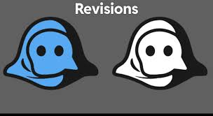
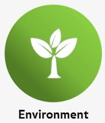
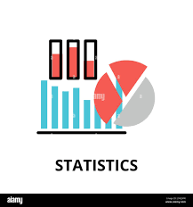

Our data analytics solutions can help businesses to easily draw insights into internal,
external, and structured data sources without the need for extensive in-house team, expertise,
and infrastructure. And for those who require data from external sources, we dig out and
collect them from reliable sources so that they can have realistic insights that indeed
deliver desirable outcomes.
This means that businesses can access the power to look beyond data, discover possibilities,
and convert them into opportunities through digitization and automation while saving nearly
30% of cost in real time. It allows to embrace the benefits of advanced tools and technologies
without any significant upfront investment. In the end, they draw opportunities through the
potential of datasets, encouraging innovation and delivering informed decisions.
A Series of Handy Services with Data Analytics
Exploratory Data Analysis (EDA)
We help you understand your data by looking for patterns and trends. We use simple charts like histograms and scatter plots to explore the data. EDA helps you find useful insights before deeper analysis.
We test your assumptions to see if they hold true using simple statistical methods. Techniques like t-tests or chi-square tests help confirm or reject your hypothesis. This gives you clear results to support your research.
We group similar data together using methods like K-means. It is widely used in data mining, pattern recognition.This helps you identify patterns and groupings in your data. Clustering is useful for finding hidden structures in your research data.
We analyze text data to find out if the overall tone is positive, negative, or neutral. By using simple language processing methods, we help you understand opinions in your surveys or social media data. This insight can guide decisions.
We analyze survey results to uncover key insights and trends. It typically involves organizing, summarizing, and interpreting the data to derive meaningful insights and conclusions.By using simple methods like cross-tabulation, we summarize the responses. This helps you understand feedback and make decisions based on the survey data.
We use regression analysis to understand relationships between variables. Techniques like linear regression, multiple regression, and logistic regression help predict outcomes. These methods help you make more accurate conclusions from your data.
We compare different sets of data to find similarities and differences. Using methods like t-tests, we identify key trends and relationships. This helps you make better decisions by comparing relevant data.
We use statistical models to find patterns and predict outcomes in your data. It enables the analysis. Techniques like regression and ANOVA help explain relationships between variables. This helps make your data analysis more accurate and reliable.
In the first step of process the data analyst is given a problem/business task
The analyst has to understand the task and the stakeholder’s expectations for the solution
Collect Data
This step includes collecting data and storing it for further analysis
The data has to be collected from various sources, internal or external sources
Data Cleaning
After the data is collected from multiple sources, it is time to clean the data
Clean data means data that is free from misspellings, redundancies, and irrelevance.
Analyzing the Data
The cleaned data is used for analyzing and identifying trends. It also performs calculations and combines data for better results
The tools used for performing calculations are Excel or SQL
Data Visualizing
Nothing is more compelling than a visualization. The data now transformed has to be made into a visual (chart, graph)
The reason for making data visualizations is that there might be people, mostly stakeholders that are non-technical
Data Presenting
Presenting the data involves transforming raw information into a format that is easily comprehensible and meaningful for various stakeholders
This process encompasses the creation of visual representations, such as charts, graphs, and tables
Numerical Data Analysis Services – Across the Discipline
PhD Assistance assists across disciplines and has expertise in handling SPSS software, AMOS, LISTER, SAS, MATLAB, R, SYSTAT, EpiInfo, and other software. We also conduct courses for handling SPSS along with the interpretation and writing of your statistical analysis output. This training course is designed by professionals and will be conducted at our center or through video conferencing facilities. Our quantitative data analysis services cover a wide array of disciplines and tools to ensure a comprehensive approach to your research.
Proficiency in Data Analysis
Mathematical Programming
Mathematical Statistics
Probability Theory
Stochastic Models
Statistical Tools Comparison
Logo
Tool
Description
SPSS
SPSS is widely used for statistical analysis and data management, especially in social sciences.
R
R is a powerful and flexible open-source programming language and environment for statistical computing and graphics.
SAS
SAS is a comprehensive software suite used for advanced analytics, business intelligence, and data management.
STATA
STATA is a statistical software package with a user-friendly interface, widely used in social sciences and economics.
Python
Python is a very popular language with numerous libraries and packages for data analysis, including pandas, NumPy, and SciPy.
Matlab
Matlab is a software environment with powerful numerical computing and visualization capabilities.
MS Excel
MS Excel's advanced data analysis features are amazing, but people mostly use it for basic data analysis.
SPSS Modeler
SPSS Modeler is an advanced data mining and predictive analytics tool that allows for complex data analysis and modeling.
Minitab
Minitab is normally used for statistical analysis, but you can also draw excellent charts and graphs with it.
JASP
JASP is a statistical analysis tool, offering a user-friendly interface.
Sample Work
See how our data analysis services have helped students and researchers achieve success. Our expert solutions deliver clear insights across various domains, ensuring accurate and actionable results. Whether you’re working on a thesis, dissertation, or any academic project, our team is ready to give you the right insights for your work.
Key Features Of Tech Titans
Subject Matter Expertise
Subject matter expertise is the cornerstone of any reliable dissertation writing service. It involves a team of highly qualified professionals with advanced academic qualifications, such as Master’s or Ph.D. degrees, in diverse fields of study. These experts possess extensive knowledge and experience, enabling them to provide in-depth guidance on complex research topics.
Plagiarism-Free Content
Plagiarism-free content is a fundamental feature of any reputable dissertation writing service. Ensuring originality in academic work is crucial, as plagiarism can have severe consequences, including rejection of the dissertation or academic penalties. A professional service guarantees that every dissertation is crafted from scratch, tailored to the client's unique requirements. Advanced plagiarism detection tools are used to verify the authenticity of the content, providing peace of mind that the work is entirely original
On-Time Delivery
On-time delivery is a critical aspect of any reliable dissertation writing service, reflecting its dedication to helping researchers meet their academic deadlines. Understanding the importance of timely submissions, professional teams work meticulously to adhere to strict schedules while maintaining the highest quality standards. From initial drafts to the final dissertation, every stage is planned and executed with precision to ensure that the work is delivered promptly
Adherence to Guidelines
Adherence to guidelines is a defining feature of a trustworthy dissertation writing service, ensuring that the work aligns with the specific requirements of the client’s university or academic institution. These services meticulously follow formatting, structuring, and referencing standards such as APA, MLA, Harvard, or Chicago, as outlined by the institution. Every aspect, from the title page and abstract to citations and appendices, is crafted to meet institutional expectations
Customized Solutions
Customized solutions are a hallmark of a professional dissertation writing service, emphasizing personalized support tailored to the unique needs of each researcher. Recognizing that every dissertation is different, these services adapt their approach to align with the research topic, academic goals, and specific university guidelines of the client.
Statistics and Software Implementation
Advanced statistical analysis requires a strong foundation in mathematical and statistical principles, as well as proficiency in using software tools (e.g., R, Python, SAS, SPSS) for implementation.Advanced statistical analysis involves complex methods for collecting, interpreting, and analyzing data to make informed decisions or predictions. It goes beyond basic descriptive statistics to explore relationships, make predictions, and draw inferences.
Confidentiality and Security
Confidentiality and security are essential for protecting sensitive information from unauthorized access and ensuring its integrity. Confidentiality involves measures like data classification, encryption, and access control to restrict data access to authorized users only. Security encompasses a range of strategies, including authentication, firewalls, data backup, and regular software updates, to safeguard against cyber threats and unauthorized access.

Revisions and Feedback
Revisions and feedback are essential for improving the quality of any work. Revisions involve refining content for clarity, accuracy, and flow, strengthening arguments, and enhancing language. Feedback provides an external perspective, helping to identify gaps or areas for improvement and offering constructive criticism to enhance the overall quality. Both processes help ensure the final product is clear, coherent, and impactful, fostering learning and growth.
Wide Variety of Subject Areas
Management
Science
Law
IT
Economics
Finance and Accounts
Sociology
Education
Logistics & Supply Chain

Environmental Studies
History

Statistics
Engineering
Medical
Literature
Computer Science
Frequently Asked Questions
Tech Titans experts will ask you to provide information about your research study during initial consultation or send the information through our customized CRM (Login Credential given) or email ID. Without your research study, it is very difficult for the statisticians to make decisions on the statistical analyses.
Our team uses tools like SPSS, STATA, SAS, MATLAB, R, and other statistical software.
Yes, we have extensive experience in statistical programming and data analysis services.
Our statisticians are highly qualified with advanced degrees in statistics and vast experience in data analysis for diverse fields.
We provide statistical programming services in various areas, including academic research, business analytics, and healthcare data analysis.
Yes, we can connect you with experts who can guide you through statistical programming based on your requirements.